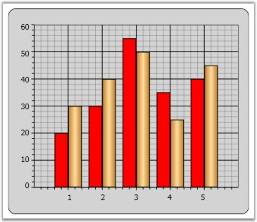
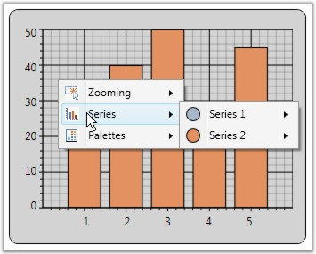
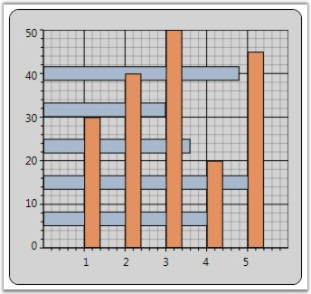
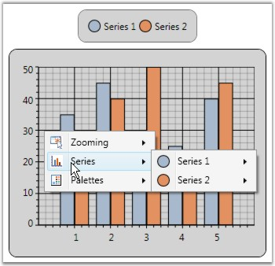

Chart Series can be customized with various properties. This section discusses the following topics.
The interior of the Chart Series can be set by using the Interior property.
|
[XAML]
<Window.Resources> <!--To be added in window resources.--> <LinearGradientBrush x:Key="SeriesAInterior" EndPoint="1,0.5" StartPoint="0,0.5"> <LinearGradientBrush.GradientStops> <GradientStop Color="#FFC07E2C" Offset="0"/> <GradientStop Color="#FFFFDD9E" Offset="0.5"/> <GradientStop Color="#FFC07E2C" Offset="1"/> </LinearGradientBrush.GradientStops> </LinearGradientBrush> </Window.Resources>
<!--To be added in window resources.--> <syncfusion:ChartSeries Interior="Red" Data="1 20 2 30 3 55 4 35 5 40" /> <syncfusion:ChartSeries Interior="{StaticResource SeriesAInterior}" Label="Series 2" Data="1 30 2 40 3 50 4 25 5 45" /> |
The following screen shot illustrates Chart Series Interior settings.

Figure 81: Chart Series Interior Settings
See Also
Essential Chart for WPF enables you to show / hide the Chart Series by using the IsVisible boolean property provided by the ChartSeries class.
|
[XAML]
<syncfusion:Chart > <syncfusion:ChartArea IsContextMenuEnabled="True" > <syncfusion:ChartSeries Label="Series 1" IsVisible="False" Data=" 1 35 2 45 3 30 4 25 5 40" /> <syncfusion:ChartSeries Label="Series 2" Data=" 1 30 2 40 3 50 4 20 5 45" /> </syncfusion:ChartArea> </syncfusion:Chart> |
|
[C#]
ChartSeries series = new ChartSeries(); series.IsVisible = false; |
The following screen shot illustrates Chart with Series 1 invisible.

Figure 82: Invisible Chart Series
See Also
Chart Series can be rotated by using the ChartSeries.IsRotated property.
|
[XAML]
<syncfusion:Chart > <syncfusion:ChartArea > <syncfusion:ChartSeries Label="Series 1" IsRotated="True" Data=" 1 35 2 45 3 30 4 25 5 40" /> <syncfusion:ChartSeries Label="Series 2" Data=" 1 30 2 40 3 50 4 20 5 45" /> </syncfusion:ChartArea> </syncfusion:Chart> |
|
[C#]
area.Series[0].IsRotated = true; |
The following screen shot illustrates Chart with Series 1 rotated.

Figure 83: Chart Series Rotated
See Also
The text displayed in the Chart Legends and the Chart Area context menu can be customized by using the ChartSeries.Label property.
|
[XAML]
<syncfusion:ChartArea> <syncfusion:ChartSeries Type="Column" Label="Series 1"/> <syncfusion:ChartSeries Type="Column" Label="Series 2"/> </syncfusion:ChartArea> |
|
[C#]
area.Series[0].Label = "Series 1"; area.Series[1].Label = "Series 2"; |
The following screen shot illustrates Chart with customized Series Labels.

Figure 84: Chart Series Labels
See Also